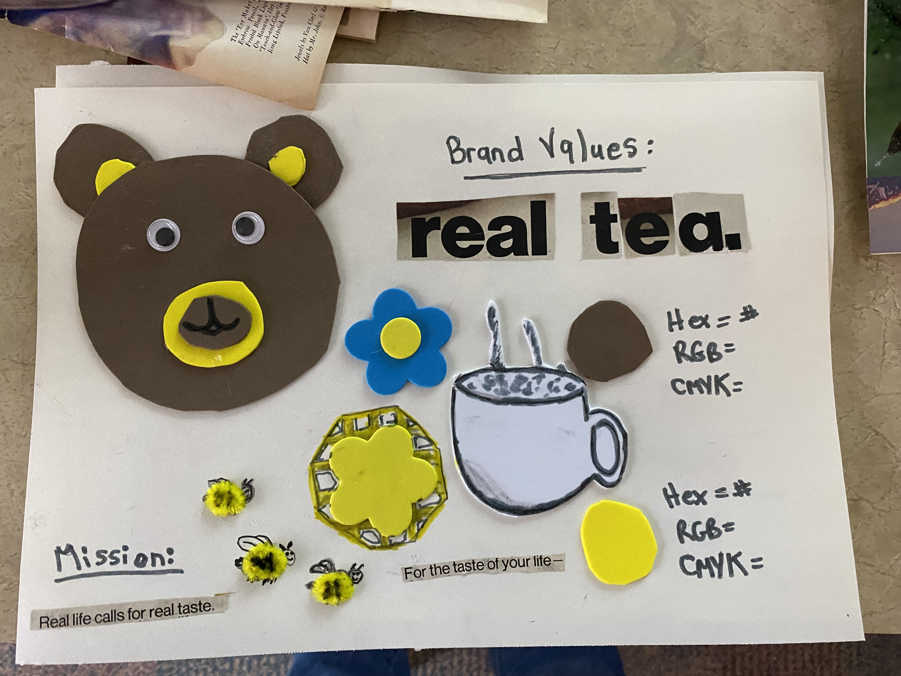

I wanted to add to my technical skill set.
Content
As I work towards building my graphic design portfolio, some of the design concepts I have worked on during my first year at SAIT are below:
Fun characters created in Adobe Illustrator to promote fictional products "Beary Tea & Vegan Swag"

Moodboard
Photo Composites created in Photoshop:

Dreamy Victorian Dinner Party Wonderland
Dreamy Victorian Dinner Party Wonderland v2
Lively Disco Night in the 1970s
Luxury Fashion Poster for a Magazine

Before and after: 1. flowers in a vase and 2. was a guess on a favourite artists new album cover (hint: the theme was right).
More info
-
-
I want to continue to build my graphic design skills and create thoughtful pieces with purpose.
-
How to use the most popular design programs, such as Adobe Illustrator, Photoshop, & InDesign.
-
Putting my skills to good use.